6 Linear regression (2)
When we have finished this chapter, we should be able to:
6.1 Multiple linear regression model
Although multivariable regression may appear complex, its concepts, computations, and interpretations are direct extensions of those in simple regression.
The general form of a linear regression model is given by:
\[\widehat{y} = b_o + b_1 \cdot x_1 + b_2 \cdot x_2 + b_3 \cdot x_3 + ...+b_p \cdot x_p \tag{6.1}\]
The objective is to obtain the coefficients-also known as partial regression slopes- \(b_o, b_1, b_2, b_3,...,b_p\).
It is important to emphasize that the term “linear” refers to the model’s linearity in the coefficients b, rather than in the explanatory variables x. For example, the following is still considered a general linear model:
\[\widehat{y} = b_o + b_1 \cdot x_1 + b_2 \cdot x_2 + b_3 \cdot x_1 \cdot x_2 + b_4 \cdot x_1^2 \tag{6.2}\]
For example, in Figure 6.1 we present a model consisted of one response variable (weight) and two continuous explanatory variables (height, headc):
\[ \begin{aligned} \widehat{\text{y}} &= b_o + b_1 \cdot x_1 + b_2 \cdot x_2\\ \widehat{\text{weight}} &= b_o + b_1 \cdot \text{height} + b_2 \cdot \text{headc} \end{aligned} \]
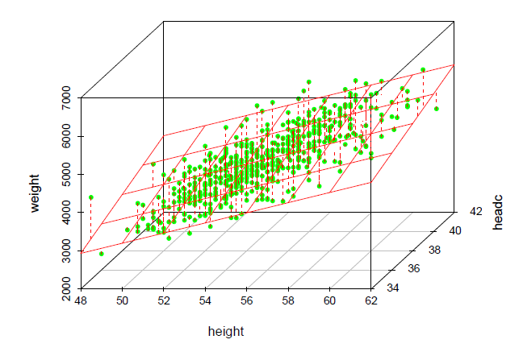
We have visualized some of the points as being located above the plane and some as being located below the plane. The deviation of a point from the plane is represented by the dashed red line and is the residual. When the model contains more than two independent variables, it is described geometrically as a hyperplane.
It is important to note that the residuals in linear regression are assumed to be independent and identically distributed following the normal distribution with mean equals to zero and constant variance.
6.2 Basic criteria for model selection
In simple linear regression, there is only one possible model, as it involves a single explanatory variable. However, in multiple linear regression, where multiple explanatory variables are involved, the challenge becomes identifying the best model. But what does “best” really mean?
Should we select a model with only a few explanatory variables, or include as many as possible? For instance, if we have 20 potential explanatory variables, should we use all of them—or just a subset? And if we choose to use a subset, how do we decide which variables to include in order to optimize a particular function or goal?
Surprisingly, these questions do not have straightforward answers—even for experienced researchers and data analysts. Variable selection in regression modeling is a complex task, and there is no universal agreement on the best approach. As we’ll see, choosing the “best” model often depends as much on scientific or practical considerations as on statistical criteria.
A fundamental principle in model selection is the preference for simplicity. When comparing two models that explain the data equally well, the simpler model is generally favored. This principle, known as Occam’s Razor (or the law of parsimony), is widely embraced across scientific disciplines, including statistics.
Parcimonious model: We typically prefer simpler models, provided they account for similar amounts of variance as more complex ones.
The idea behind a parsimonious model is to avoid overfitting, where a model becomes too complex and starts to capture noise rather than the underlying patterns in the data. A parsimonious model aims to find a balance between complexity and performance, ensuring that the model is neither too simple (underfitting) nor too complex (overfitting).
6.3 Strategies for model selection
Next we present some commonly used strategies for model selection:
- Simultaneous Regression
The first and most straightforward approach to model selection is to include all available explanatory variables and assess model fit based on this complete model. This is known as full entry or simultaneous regression. In this method, the regression model is built by estimating all parameters simultaneously. However, there are cases where full-entry or simultaneous regression may not be the best choice for model-building. In such instances, the researcher may prefer to adopt a more complex algorithm for constructing the regression model.
- Hierarchical Regression
In hierarchical regression, unlike in simultaneous regression, where all explanatory variables are entered into the model at once, researchers typically follow a pre-specified order for introducing variables creating multiple models or blocks. The order is usually driven by theory, reflecting the researcher’s prior knowledge. Hierarchical regression is particularly popular among social scientists when testing mediational hypotheses.
- Automated regression methods (Best subset selection)
(NOTE: This approach is not supported by JAMOVI.)
These methods combine the explanatory variables in all possible ways. The best subset selection (using backward elimination, forward selection, or both[stepwise selection]) seek to find the best model according to statistical criteria in many steps (stepwise method, the model is re-avaluated in each step). However, as you might imagine, the number of possible models quickly becomes quite large.
It is important to note that several statistical criteria can be used to assess the efficiency or fit of a model, with penalties for the number of explanatory variables. These criteria are calculated and compared across a set of competing models, providing an objective basis for selecting the “best” regression model. Examples include adjusted R-squared, Akaike Information Criterion (AIC)—where a smaller AIC indicates a better model—and Bayesian Information Criterion (BIC).
At first glance, especially for those new to statistics, automated selection methods may seem like an ideal solution for many multiple regression problems. They can appear to be the “panacea” for model selection—after all, allowing the computer to determine the “correct” model using its complex computational abilities seems like a logical approach.
However, the issue is not as straightforward as it may seem, and several statistical and substantive challenges complicate the application of these methods. While automation offers convenience, it also has significant drawbacks, and not all decisions can or should be left to a computer. In addition to these statistical issues, there are substantive considerations to account for when selecting a model. The final model chosen by automated methods may not always offer the most practical value or utility.
From a statistical perspective, automated selection methods, such as forward and backward regression, can introduce bias into parameter estimates, making the resulting inferential model unreliable. After multiple iterations, the probability of a Type I error becomes higher than the nominal \(\alpha\) (typically 0.05). In addition to these statistical issues, there are substantive considerations to account for when selecting a model. The final model chosen by automated methods may not always offer the most practical value or utility.
Maximizing statistical criteria is not the same as maximizing utility of the model.
- Purposeful selection process
The purposeful selection process begins with a univariable analysis of each candidate variable. A general decision rule is then applied to determine which variables to include. For example, any variable with a p-value < 0.20 in the univariable analysis may be selected for the multivariable analysis.
However, since the primary goal of a multivariable model is typically to assess the effect of the study intervention while controlling for potential confounders, variable selection should also take into account existing knowledge and the clinical significance of the variables. If necessary, the initial rule can be adjusted. For example, a potential confounder may be included in the model if it alters the coefficient of the primary exposure variable by 10% in the multivariable model.
6.4 Importing data
Continuing from the previous chapter, we will work with the BirthWeight dataset. This time, we aim to explore the association between infant weight and all other measured explanatory variables.
Open the dataset named “BirthWeight” from the file tab in the menu.

Data of 550 infants at 1 month age was collected. The following variables were recorded (Figure 6.3):
• Body weight of the infant in g (weight)
• Body height of the infant in cm (height)
• Head circumference in cm (headc)
• Gender of the infant (gender: Female, Male)
• Birth order in their family (parity: Singleton, One sibling, 2 or more siblings)
• Education of the mother (education: tertiary, year10, year12)
6.5 Simultaneous Regression
First, we will include all available explanatory variables and assess model fit based on this complete model.
On the Jamovi top menu navigate to
flowchart LR A(Analyses) -.-> B(Regression) -.-> C(Linear Regression)
as shown below (Figure 6.4).

The Linear Regression dialogue box opens (Figure 5.8). From the left-hand pane drag the variable weight into the Dependent Variable field, the variables height and headc into the Covariates field, and the variables gender, parity, and education into the factors field on the right-hand side, as shown below (Figure 6.5):
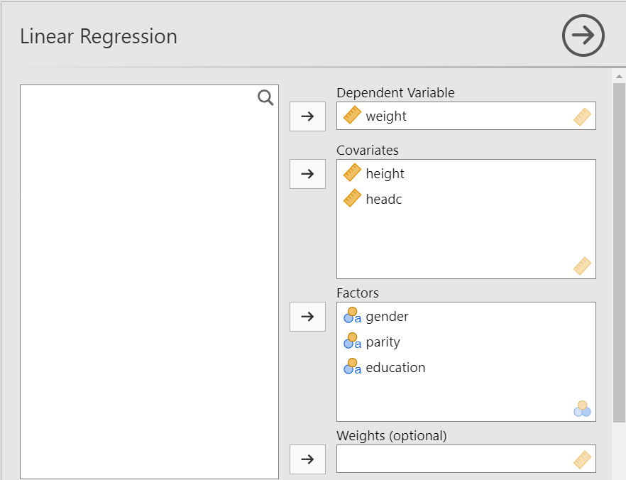
We also set reference groups for the categorical variables from the Reference Level box: “Female” for the gender variable, “Singleton” for the parity variable, and “year10” for the education variable.
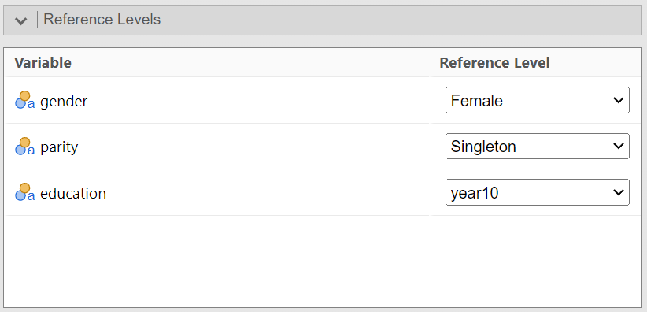
6.5.1 Assumptions
Specific assumptions have to be met for reliable hypothesis testing and confidence intervals in linear regression: independence of the residuals, linearity and homoscedasticity of the data, normality of the residuals, no multicollinearity and outliers. We will describe some statistical tests and diagnostic plots in Jamovi for testing the assumptions underlying linear regression model.
From the Assumption Checks section tick the all the boxes and from the Data Summary the “Cook’s distance” (Figure 6.7):
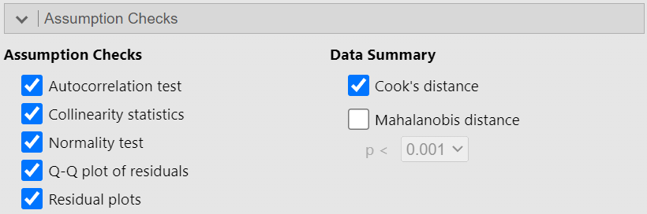
Independence of residuals
The independence of residuals assumption means that for any two observations, the residual terms should be uncorrelated (or independent).
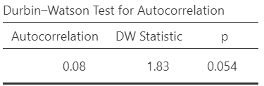
The Durbin-Watson test assesses whether the residuals from a regression model are independent—that is, whether there is autocorrelation. Ideally, the Durbin-Watson statistic should be close to 2. Values significantly below 1 or above 3 suggest a violation of the independence assumption. In our case, the Durbin-Watson statistic is 1.83, which is close to 2, indicating no evidence of problematic autocorrelation.
Linearity and homoscedasticity of the data
To examine linearity and homoscedasticity we examine the Residuals vs Fitted value Plot.
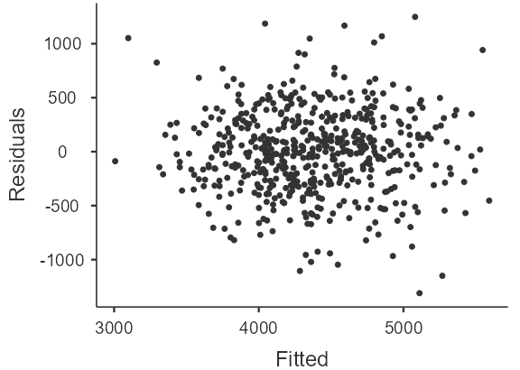
We would expect to see a random scatter of points around zero on the y-axis. In our example, the residuals appear randomly dispersed in a cloud-like pattern, which indicates that the assumption of linearity and homoscedasticity is satisfied.
If the residuals display a pattern—such as being more spread out at the ends and tighter in the middle (a bow tie shape), or more spread out on one side of the x-axis and tighter on the other (a funnel or fan shape)—this suggests heteroscedasticity. In such cases, the assumption of homoscedasticity is violated.
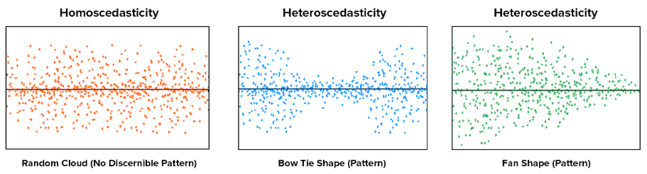
6.5.2 Normality of the residuals
The check normality of the residuals with the Shapiro-Wilk’s test and the normal Q-Q plot of the residuals.
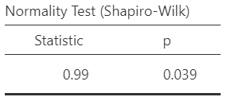
Note that this test almost always yields significant results for the distribution of residuals for large samples and visual inspection (e.g., Q-Q plots) are preferable.
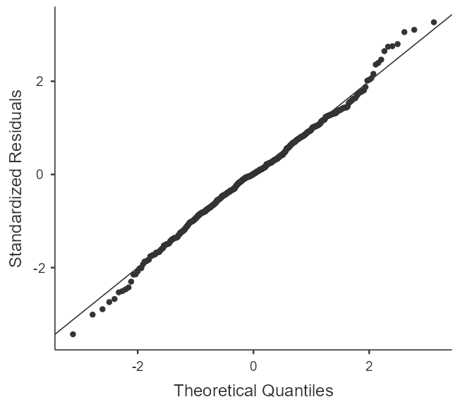
The Figure 6.12 shows no significant deviation from normality.
6.5.3 No multicollinearity
This assumption means there should be no perfect or near-perfect linear relationship between two or more of the explanatory variables (predictors) in our regression model. Multicollinearity is a problem for three reasons:
Untrustworthy \(b\): As multicollinearity increases, so do the standard errors of the \(b\) coefficients. We want smaller standard errors, so this is problematic.
Limits the size of R, and therefore the size of \(R^2\), and we want to have the largest \(R^2\) possible, given our data.
Importance of explanatory variables (predictors): When two explanatory variables are highly correlated, it is very hard to determine which variable is more important than the other.
To test for multicollinearity, we examine the VIF and Tolerance values. VIF is actually a transformation of Tolerance (Tolerance = 1/VIF). In general, we want VIF values 5 or lower, which corresponds to Tolerance values greater than (1/5) 0.2.
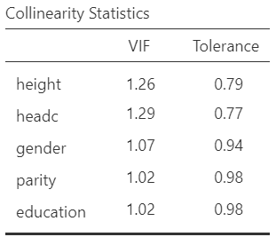
In our data, the VIF values satisfy the assumption of no multicollinearity.
Proposed remedies for multicollinearity
• Increase the sample size: A larger sample can reduce the standard errors of the coefficient estimates, thereby improving the precision and stability of the model.
• Model respecification: Remove some of the highly associated explanatory variables or replace them with a linear combination of them (if possible).
• Regularization (Tolerant) techniques: Some regression techniques may be more sensitive to multicollinearity than others. Recent developments in model selection methods have introduced new methods for balancing model complexity and fit. For example two special linear regression model — Lasso and Ridge regression. Although not necessarily designed to be tolerant of collinearity, they offer approaches that may be less sensitive.
• Principal Component Regression: This technique transforms the original correlated variables into a smaller set of uncorrelated components and uses them in the regression, effectively addressing multicollinearity.
• Change the reference category for categorical variables: In cases where multicollinearity arises from dummy variables, selecting a different reference category can sometimes alleviate the problem.
6.5.4 No outliers that influence the model (influential points)
There shouldn’t be any data point in the dataset that is an outlier which would strongly influence our results.
Outliers are points that fall away from the cloud of points. Outliers that actually influence the parameters of the regression model are called influential points. Therefore, not all outliers are influential in linear regression analysis. Even though data have extreme values, they might not be influential to determine a regression model. That means, the results wouldn’t be much different if we either include or exclude them from analysis.
Cook’s distance is a measure used to identify influential data points in regression analysis. In general, Cook’s distances greater than 1 indicate an outlier that may influence the model.
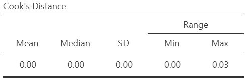
Our Cook’s distances are very small, so we do not have a problem with outliers.
6.5.5 The model fit and coefficients
From the Model Fit section tick the box “Adjusted \(R^2\)” in Fit Measures (Figure 6.16):
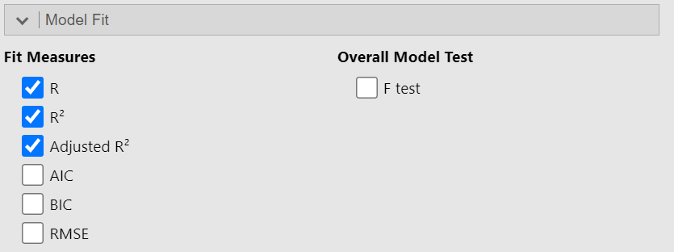
Additionally, from the Model Coefficients section tick the box “Confidence interval” in Estimate (Figure 6.16):

Adjusted R-squared: This metric adjusts the R-squared value to account for the number of explanatory variables (predictors) in the model.
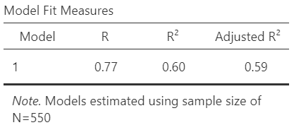
About 59% of the variation in infant’s body weight can be explained by the independent variables (such as height, head circumference, gender, etc.) in the model.
The output table with the model coefficients should look like the following (Figure 6.18):

The equation of our model with all variables is:
\[\begin{align} \widehat{Weight} &= -7082 + 131 \cdot height + 109 \cdot headc + 196 \cdot gender \\ &\quad +\ 76 \cdot parity1 + 96 \cdot parity2 - 35 \cdot edu1 - 36 \cdot edu2 \end{align}\]
All variables in the model are statistically significant except for the comparison between infants with two or more siblings and singletons (p = 0.06), as well as the mother’s education level (year12-year10, p = 0.47; tertiary-year10 p = 0.33).
6.6 Hierarchical regression
First, we check Akaike Information Criterion (AIC) from the Model Fit (Figure 6.19).
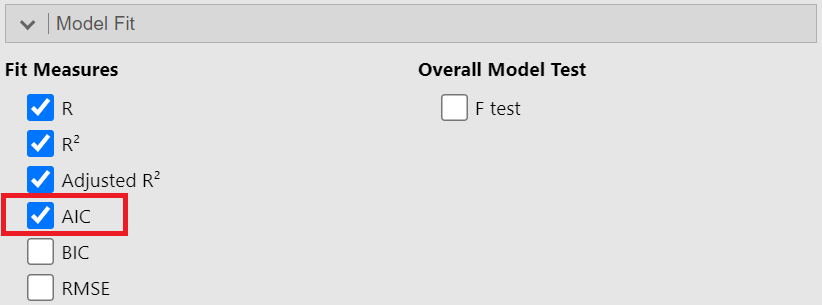
The AIC is a statistical measure used to evaluate the goodness of fit of a model while penalizing for the number of parameters used. It helps compare different models and choose the one that best balances model fit and complexity. A lower AIC indicates a better model.
6.6.1 Model 1
We can specify hierarchical regression using the Model Builder drop-down menu in jamovi (Figure 6.20). Let’s select height and gender variables (predictors) as Block 1 (Model 1).
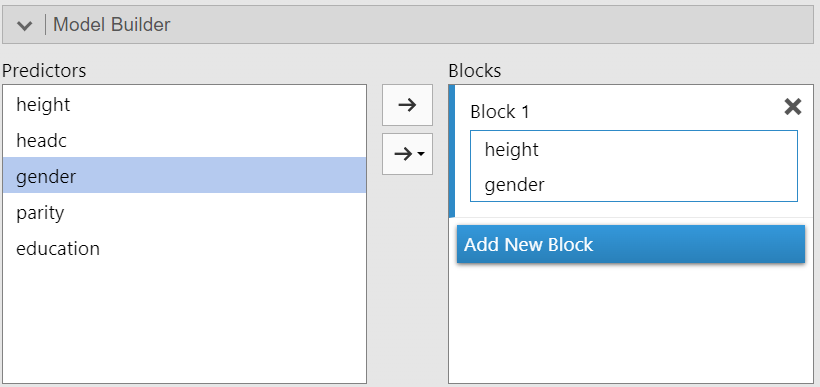
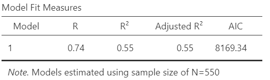
About 55% of the variation in infant’s body weight can be explained by height and gender in the model 1.
The output table with the model coefficients should look like the following (Figure 6.22):
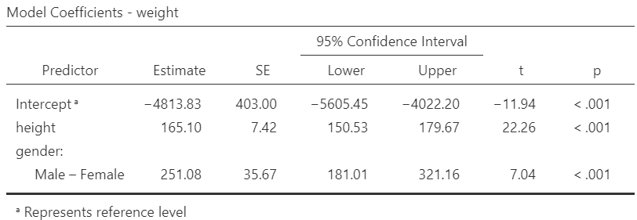
The equation of model 1 is:
\[\widehat{Weight} = -4814 + 165 \cdot height + 251 \cdot gender\]
Both variables in the model are statistically significant (p<0.001).
6.6.2 Model 2
Next, we select Add New Block and include the headc and parity variables in Block 2 (Model 2).
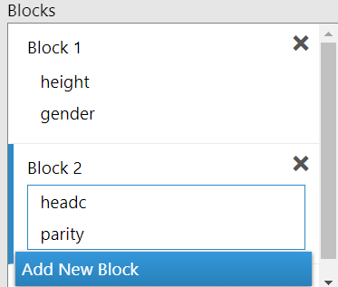
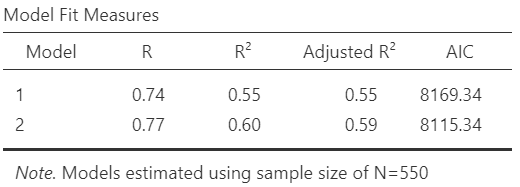
Model 2 explains approximately 59% of the variation in infant body weight using the variables height, gender, headc, and parity, compared to 55% in Model 1 (\(\Delta R_{adj}^2 = 0.04\) or 4%). Additionally, the AIC of Model 2 (8115) is lower than that of Model 1 (8169), indicating that Model 2 has a better fit.
The output table with the new model coefficients should look like the following (Figure 6.25):
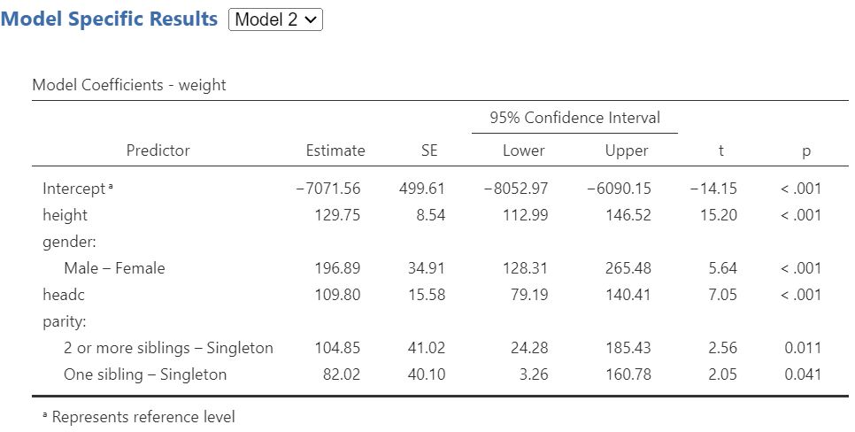
The equation of model 2 is:
\[\begin{align} \widehat{Weight} &= -7072 + 130 \cdot height + 197 \cdot gender + 110 \cdot headc \\ &\quad +\ 82 \cdot parity1 + 105 \cdot parity2 \end{align}\]
All variables in the model are statistically significant (p<0.05).
6.6.3 Model 3
Finally, we select Add New Block and include the education variable in Block 3 (Model 3).
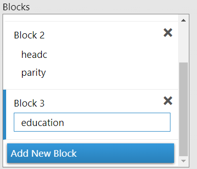
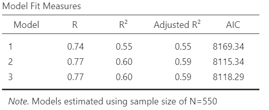
Model 3 does not explain more variation than Model 2. Additionally, the AIC of Model 3 (8118) is greater than that of Model 2 (8115), indicating that Model 3 provides a worse fit.
The output table with the new model coefficients should look like the following (Figure 6.25):
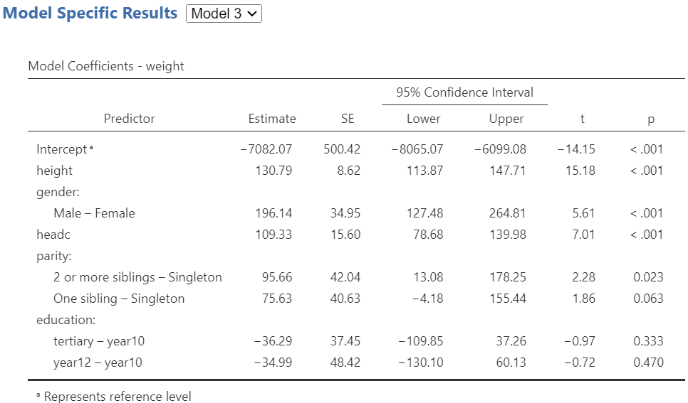
The equation of model 3 is:
\[\begin{align} \widehat{Weight} &= -7082 + 131 \cdot height + 109 \cdot headc + 196 \cdot gender \\ &\quad +\ 76 \cdot parity1 + 96 \cdot parity2 - 35 \cdot edu1 - 36 \cdot edu2 \end{align}\]
NOTE: This model is the complete that we have previously explored.
6.7 Model with interaction
Finally, we remove education from Block 3 and add the interaction term between height and gender.
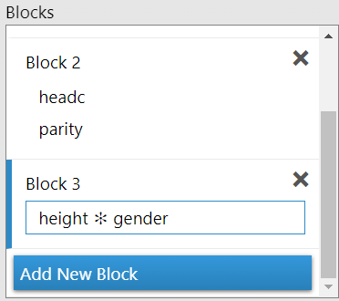
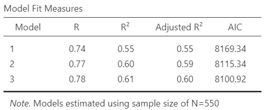
The AIC of Model 3 (8101) is lower than that of Model 2 (8115), indicating that Model 3 with the interaction term has a better fit.
The output table with the new model coefficients should look like the following (Figure 6.25):
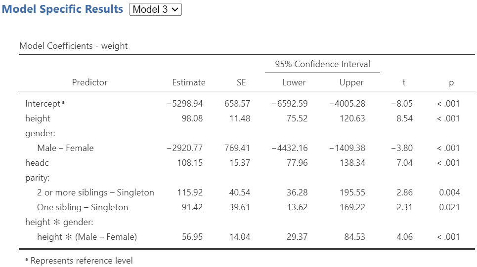
The interaction term is statistically significant (Estimate = 57, p < 0.001), suggesting that the effect of height on body weight differs by gender. This indicates effect modification (also known as a moderation effect), where gender alters the strength of the association between height and body weight.
The equation of model 3 with the interaction term is:
\[\begin{align} \widehat{Weight} &= -5299 + 98 \cdot height + 108 \cdot headc -2921 \cdot gender \\ &\quad +\ 91 \cdot parity1 + 116 \cdot parity2 + 57 \cdot heigh * gender \end{align}\]
In this case, the main effects of height and gender are not interpreted independently, as the interaction term modifies their meanings. Specifically:
- For females (reference; gender = 0):
\[\begin{align} \widehat{Weight} &= -5299 + 98 \cdot height + 108 \cdot headc -2921 \cdot 0 \\ &\quad +\ 91 \cdot parity1 + 116 \cdot parity2 + 57 \cdot heigh * 0 \end{align}\] \[\begin{align} \widehat{Weight} &= -5299 + 98 \cdot height + 108 \cdot headc + 91 \cdot parity1 + 116 \cdot parity2 \end{align}\]
Thus, the effect of height on body weight is 98 g.
- For males (gender = 1):
\[\begin{align} \widehat{Weight} &= -5299 + 98 \cdot height + 108 \cdot headc -2921 \cdot 1 \\ &\quad +\ 91 \cdot parity1 + 116 \cdot parity2 + 57 \cdot heigh * 1 \end{align}\] \[\begin{align} \widehat{Weight} &= -8220 + (98 + 57) \cdot height + 108 \cdot headc + 91 \cdot parity1 + 116 \cdot parity2 \\ \end{align}\]
Thus, the effect of height is 98 + 57 = 155 g.
This implies that height has a stronger influence on weight for males than for females.